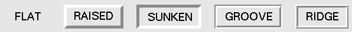

Стили рельефа виджета относится к определенным имитированным 3D-эффектам вокруг внешней части виджета.
Ниже показан снимок экрана строки кнопок, демонстрирующих все возможные стили рельефа:

Ширина этих границ зависит от опции borderwidth виджета. На приведенной выше графике показано, как они выглядят с границей в 5 пикселей; ширина границы по умолчанию составляет 2 пикселя.